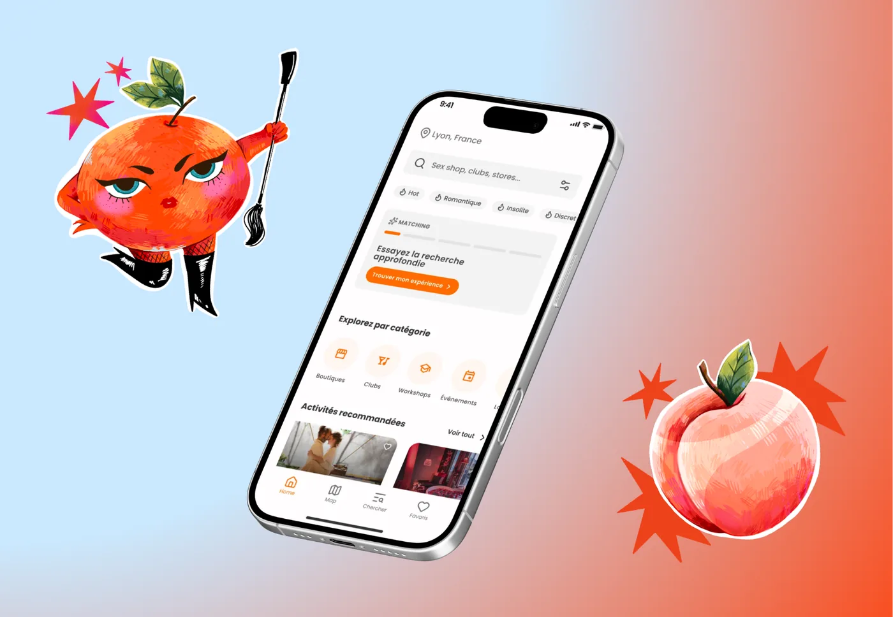
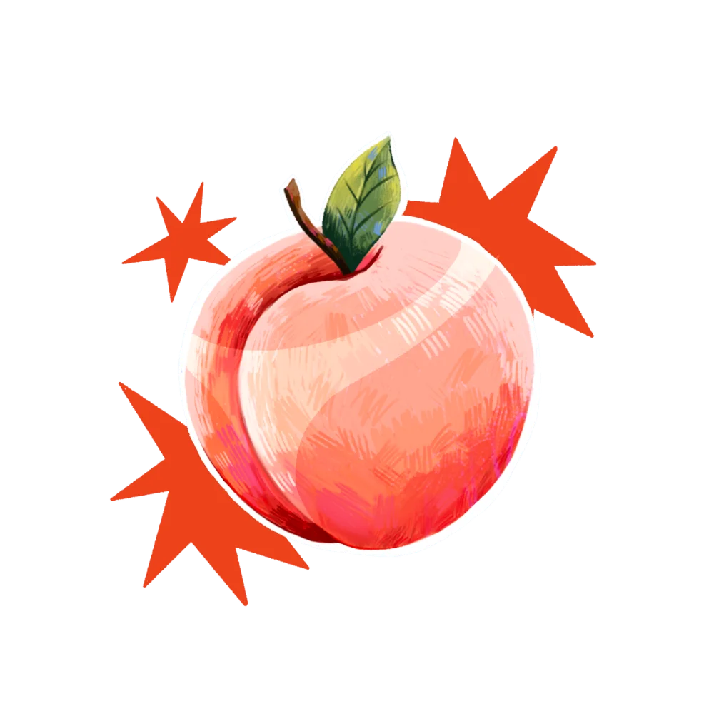
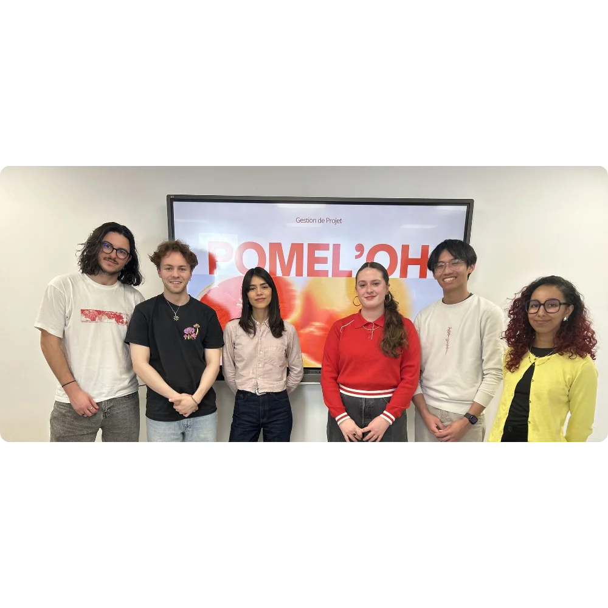
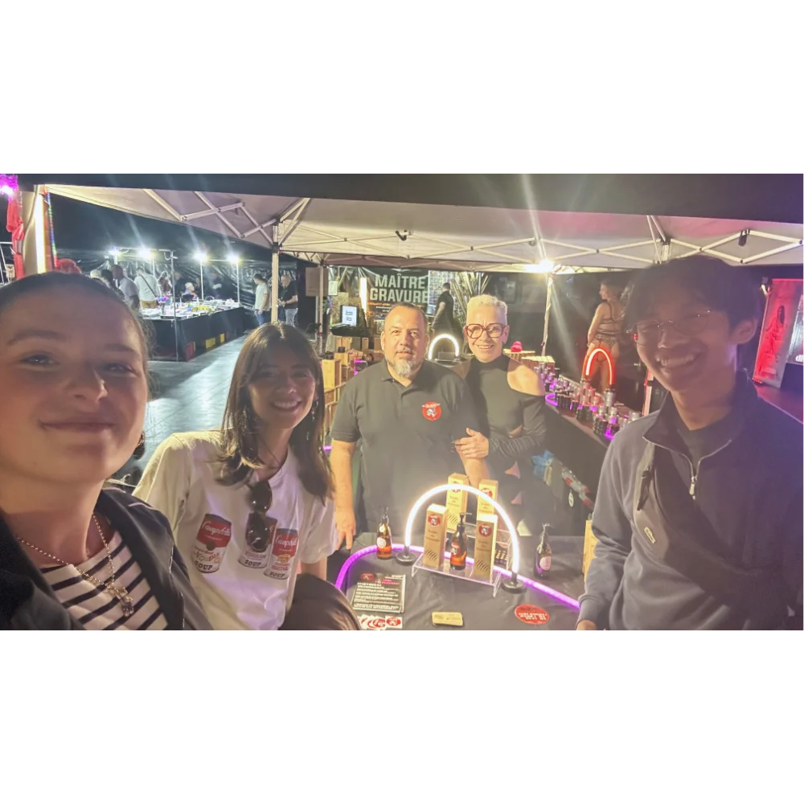

Recommandations personnalisées
Un questionnaire analyse les préférences, les limites et les centres d’intérêt afin de proposer un parcours réellement adapté.
Transformer une intuition en concept crédible grâce à la recherche utilisateur, à l’étude de marché et à une démarche produit complète.

Pomel’oh · Concept d’application
Développé en équipe pendant le Master Marketing Digital, Pomel’oh est un concept d’application fondé sur une enquête terrain et une étude de marché.
Nous avons exploré un besoin : découvrir ses envies avec des repères fiables, des recommandations adaptées et un cadre rassurant.
Créer un accompagnement personnalisé, pédagogique et discret pour aider chacun à découvrir des expériences qui lui correspondent.
Inspiré d’Akinator, le parcours imaginé affine les recommandations selon les envies, les limites et le niveau de confiance de l’utilisateur.
Un questionnaire analyse les préférences, les limites et les centres d’intérêt afin de proposer un parcours réellement adapté.
Une sélection d’expériences et de professionnels référencés selon des critères de sérieux, de sécurité et de respect.
Des contenus fiables apportent des repères concrets et permettent d’avancer à son rythme, sans jugement.
Les recommandations s’ajustent au fil des réponses et des retours d’expérience pour construire un accompagnement durable.
Le projet s’est construit par itérations courtes, en confrontant régulièrement nos hypothèses à des utilisateurs et à des professionnels.
Observer le marché, ses codes, ses acteurs et les solutions déjà disponibles.
Benchmark des offres existantes, analyse des concurrents et observations sur le terrain pour cartographier le marché avant de concevoir la solution.Conduire des entretiens qualitatifs pour comprendre les attentes et les freins.
Plus de 100 réponses au questionnaire et une vingtaine d’entretiens ont permis de faire émerger les besoins, les freins et les attentes prioritaires.Formaliser la cible, la proposition de valeur et les fonctionnalités prioritaires.
Les enseignements de la recherche ont été traduits en cible, proposition de valeur, parcours utilisateur et fonctionnalités à prioriser.Structurer le modèle, prototyper le service et défendre le projet devant un jury.
Le concept, le modèle économique et le prototype ont été réunis dans un pitch structuré, puis défendus devant un jury professionnel.La recherche a permis d’identifier des tendances, de préciser les attentes et surtout de faire émerger les conditions indispensables à la confiance.
réponses collectées pour mesurer l’intérêt et les attentes
échanges qualitatifs pour approfondir les usages et les freins
salon spécialisé exploré pour observer le marché sur le terrain
acteurs du secteur rencontrés pour challenger le concept
Une audience majoritairement jeune, complétée par des profils plus expérimentés.
Survolez le graphique ou sa légende pour afficher le détail de chaque tranche d’âge.
56 % des répondants se disent intéressés ; 28 % restent hésitants.
Le centre du graphique s’actualise au passage de la souris.
Les enseignements orientent directement la conception du service et son ton de communication.
Longueur des barres : échelle de 0 à 100 %.
Les entretiens ont renforcé trois principes directeurs pour la future expérience.
« J’ai envie de découvrir, mais j’ai besoin de savoir vers qui me tourner. »
« Avant d’essayer quelque chose de nouveau, j’ai besoin d’être rassuré. »
« Une recommandation qui tient compte de mes limites serait beaucoup plus utile. »
| Âge | Part |
|---|---|
| 18–24 ans | 43 % |
| 25–34 ans | 28 % |
| 35–44 ans | 18 % |
| 45 ans et plus | 11 % |
| Réponse | Part |
|---|---|
| Oui | 56 % |
| Peut-être | 28 % |
| Non | 16 % |
| Frein | Part |
|---|---|
| Manque de confiance | 32 % |
| Informations peu fiables | 24 % |
| Peu de personnalisation | 19 % |
| Manque de discrétion | 15 % |
| Budget | 10 % |
Pomel’oh ne cherche pas seulement à centraliser de l’information : le service organise la découverte et accompagne chaque décision.
Le pitch final a réuni la recherche terrain, la proposition de valeur, le modèle économique et le prototype.
Un projet collectif mené comme une démarche entrepreneuriale complète, de l’exploration du marché jusqu’au pitch.

Sept moments de recherche, des observations sur le terrain aux entretiens utilisateurs.

Une première immersion dans un salon spécialisé pour découvrir les acteurs, comprendre leur manière de présenter leurs services et observer les réactions du public.
Cliquez sur une miniature ou utilisez les flèches du clavier.